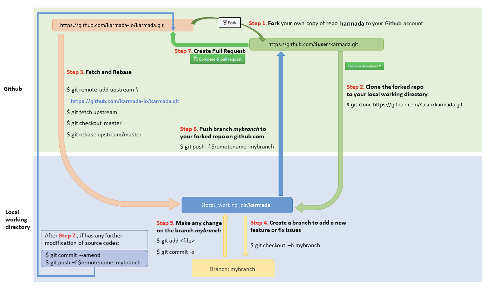

This doc is lifted from Kubernetes github-workflow.

1 Fork in the cloud
- Visit https://github.com/karmada-io/karmada
- Click
Forkbutton (top right) to establish a cloud-based fork.
2 Clone fork to local storage
Per Go's workspace instructions, place Karmada' code on your
GOPATH using the following cloning procedure.
Define a local working directory:
# If your GOPATH has multiple paths, pick
# just one and use it instead of $GOPATH here.
# You must follow exactly this pattern,
# neither `$GOPATH/src/github.com/${your github profile name/`
# nor any other pattern will work.
export working_dir="$(go env GOPATH)/src/github.com/karmada-io"
Set user to match your github profile name:
export user={your github profile name}
Both $working_dir and $user are mentioned in the figure above.
Create your clone:
mkdir -p $working_dir
cd $working_dir
git clone https://github.com/$user/karmada.git
# or: git clone git@github.com:$user/karmada.git
cd $working_dir/karmada
git remote add upstream https://github.com/karmada-io/karmada.git
# or: git remote add upstream git@github.com:karmada-io/karmada.git
# Never push to upstream master
git remote set-url --push upstream no_push
# Confirm that your remotes make sense:
git remote -v
3 Branch
Get your local master up to date:
# Depending on which repository you are working from,
# the default branch may be called 'main' instead of 'master'.
cd $working_dir/karmada
git fetch upstream
git checkout master
git rebase upstream/master
Branch from it:
git checkout -b myfeature
Then edit code on the myfeature branch.
4 Keep your branch in sync
# Depending on which repository you are working from,
# the default branch may be called 'main' instead of 'master'.
# While on your myfeature branch
git fetch upstream
git rebase upstream/master
Please don't use git pull instead of the above fetch / rebase. git pull
does a merge, which leaves merge commits. These make the commit history messy
and violate the principle that commits ought to be individually understandable
and useful (see below). You can also consider changing your .git/config file via
git config branch.autoSetupRebase always to change the behavior of git pull, or another non-merge option such as git pull --rebase.
5 Commit
Commit your changes.
git commit --signoff
Likely you go back and edit/build/test some more then commit --amend
in a few cycles.
6 Push
When ready to review (or just to establish an offsite backup of your work),
push your branch to your fork on github.com:
git push -f ${your_remote_name} myfeature
7 Create a pull request
- Visit your fork at
https://github.com/$user/karmada - Click the
Compare & Pull Requestbutton next to yourmyfeaturebranch.
If you have upstream write access, please refrain from using the GitHub UI for creating PRs, because GitHub will create the PR branch inside the main repository rather than inside your fork.
Get a code review
Once your pull request has been opened it will be assigned to one or more reviewers. Those reviewers will do a thorough code review, looking for correctness, bugs, opportunities for improvement, documentation and comments, and style.
Commit changes made in response to review comments to the same branch on your fork.
Very small PRs are easy to review. Very large PRs are very difficult to review.
Squash commits
After a review, prepare your PR for merging by squashing your commits.
All commits left on your branch after a review should represent meaningful milestones or units of work. Use commits to add clarity to the development and review process.
Before merging a PR, squash the following kinds of commits:
- Fixes/review feedback
- Typos
- Merges and rebases
- Work in progress
Aim to have every commit in a PR compile and pass tests independently if you can, but it's not a requirement. In particular, merge commits must be removed, as they will not pass tests.
To squash your commits, perform an interactive rebase:
- Check your git branch:
git status
Output is similar to:
On branch your-contribution
Your branch is up to date with 'origin/your-contribution'.
- Start an interactive rebase using a specific commit hash, or count backwards from your last commit using
HEAD~<n>, where<n>represents the number of commits to include in the rebase.
git rebase -i HEAD~3
Output is similar to:
``` pick 2ebe926 Original commit pick 31f33e9 Address feedback pick b0315fe Second unit of work
# Rebase 7c34fc9..b0315ff onto 7c34fc9 (3 commands)
#
# Commands:
# p, pick
...
```
- Use a command line text editor to change the word
picktosquashfor the commits you want to squash, then save your changes and continue the rebase:
``` pick 2ebe926 Original commit squash 31f33e9 Address feedback pick b0315fe Second unit of work
...
```
Output (after saving changes) is similar to:
``` [detached HEAD 61fdded] Second unit of work Date: Thu Mar 5 19:01:32 2020 +0100 2 files changed, 15 insertions(+), 1 deletion(-)
...
Successfully rebased and updated refs/heads/master. ``` 4. Force push your changes to your remote branch:
git push --force
For mass automated fixups (e.g. automated doc formatting), use one or more commits for the changes to tooling and a final commit to apply the fixup en masse. This makes reviews easier.
Merging a commit
Once you've received review and approval, your commits are squashed, your PR is ready for merging.
Merging happens automatically after both a Reviewer and Approver have approved the PR. If you haven't squashed your commits, they may ask you to do so before approving a PR.
Reverting a commit
In case you wish to revert a commit, use the following instructions.
If you have upstream write access, please refrain from using the
Revert button in the GitHub UI for creating the PR, because GitHub
will create the PR branch inside the main repository rather than inside your fork.
- Create a branch and sync it with upstream.
```sh # Depending on which repository you are working from, # the default branch may be called 'main' instead of 'master'.
# create a branch git checkout -b myrevert
# sync the branch with upstream
git fetch upstream
git rebase upstream/master
```
- If the commit you wish to revert is a:
- merge commit:
```sh
# SHA is the hash of the merge commit you wish to revert
git revert -m 1 SHA
```
-
single commit:
```sh
SHA is the hash of the single commit you wish to revert
git revert SHA ```
-
This will create a new commit reverting the changes. Push this new commit to your remote.
git push ${your_remote_name} myrevert
- Create a Pull Request using this branch.